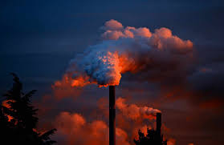

Las consecuencias más graves del calentamiento global son las siguientes: Deshielo de los glaciares. La glacióloga Twila Moon, del Centro Nacional de Datos de Hielo y Nieve de la Universidad de Colorado en Boulder (Estados Unidos), afirma en un artículo publicado en la revista Science que los glaciares de todo el mundo están desapareciendo y que el derretimiento del hielo contribuye a aumentar el nivel del mar, lo que puede causar el desplazamiento de millones de personas. Sequía. El aumento de la temperatura es el responsable de la escasez de lluvias y la sequía. La sequía supone la degradación de zonas áridas, semiáridas o subhúmedas secas como consecuencia de cambios en el clima y de la actividad humana. En España el año 2017 fue uno de los más secos desde 1965, ya que las precipitaciones fueron inferiores a otros años en un 20%. En África la situación es muy grave. En el año 2009 en el Cuerno de África se produjo una de las mayores sequías de la historia y más de dos millones de personas tuvieron que abandonar sus casas en la capital de Somalia (Mogadiscio). La hambruna produjo la muerte de 250.000 personas. Desaparición de especies animales y vegetales. El deshielo de los glaciares y el aumento de la temperatura afectan a numerosas especies de animales y plantas, especialmente al oso polar, que ve disminuir su hábitat y desaparecer su forma de vida. Inundaciones. El aumento del nivel del mar y la subida de la temperatura suponen un incremento de las precipitaciones en determinados lugares, en los que se producen inundaciones. Muchas ciudades costeras en todo el mundo se encuentran en planicies situadas bajo el nivel del mar, por lo que el riesgo de inundaciones es alto. Efectos sobre la agricultura y en la ganadería. El aumento de la temperatura y la sequía pueden afectar gravemente a la agricultura y a la ganadería y producir escasez de alimentos. Incendios forestales. Suponen un peligro no solo para los animales y las plantas, sino también para el ser humano, debido a la liberación de dióxido de carbono. Consecuencias para la salud. La contaminación del aire que se deriva del calentamiento global puede producir consecuencias adversas en nuestra salud como problemas respiratorios o infecciones. Como ves, las consecuencias del calentamiento global son muy importantes y está en nuestra mano frenar el deterioro de nuestro entorno.
| ¿QUÉ ES? | es un gas atmosférico que absorbe y emite radiación dentro del rango infrarrojo. Este proceso es la fundamental causa del efecto invernadero. Los principales GEI en la atmósfera terrestre son el vapor de agua (H2O), el dióxido de carbono (CO2), el metano (CH4), el óxido nitroso (N2O) y el ozono. Sin los gases de efecto invernadero la temperatura promedio de la superficie terrestre sería alrededor de −18 °C, en lugar de la media actual de 15 °C. En el sistema solar, las atmósferas de Venus, Marte y Titán también albergan gases que causan un efecto invernadero. |  |
|---|---|---|
La actividad humana desde el inicio de la Revolución Industrial (considerado en 1750) ha producido un incremento del 45 % en la concentración atmosférica del dióxido de carbono, de fórmula CO2, desde 280 ppm en 1750 a 400 ppm en 2015. Este incremento ha ocurrido a pesar de la absorción de una gran porción de las emisiones por varios depósitos naturales que participan del ciclo del carbono. Las emisiones de CO2 antropogénicas (producidas por actividades humanas) provienen de la combustión de combustibles fósiles, principalmente carbón, petróleo y gas natural, además de la deforestación, la erosión del suelo y la crianza animal. | ||
| Gases invernadero Espectro de absorción en el infrarrojo del conjunto de la atmósfera (abajo) y de gases específicos. De algunos se marcan solamente los centros de sus bandas de absorción (De Graedel & Crutzen, 1993). El vapor de agua (H2O) es un gas que se obtiene por evaporación o ebullición del agua líquida o por sublimación del hielo. Es el que más contribuye al efecto invernadero debido a la absorción de los rayos infrarrojos. Es inodoro e incoloro y, a pesar de lo que pueda parecer, las nubes o el vaho blanco de una cacerola o un congelador, vulgarmente llamado "vapor", no son vapor de agua sino el resultado de minúsculas gotas de agua líquida o cristales de hielo. Dióxido de carbono (CO2) óxido de carbono (IV), también denominado dióxido de carbono, gas carbónico y anhídrido carbónico, es un gas cuyas moléculas están compuestas por dos átomos de oxígeno y uno de carbono. Su fórmula química es CO2. | Metano (CH4) El metano (del griego methy, vino, y el sufijo -ano) es el hidrocarburo alcano más sencillo, cuya fórmula química es CH4. Cada uno de los átomos de hidrógeno está unido al carbono por medio de un enlace covalente. Es una sustancia no polar que se presenta en forma de gas a temperaturas y presiones ordinarias. Es incoloro e inodoro y apenas soluble en agua en su fase líquida. Óxidos de nitrógeno (NOx) El término óxidos de nitrógeno (NxOy) se aplica a varios compuestos químicos binarios gaseosos formados por la combinación de oxígeno y nitrógeno. El proceso de formación más habitual de estos compuestos inorgánicos es la combustión a altas temperaturas, proceso en el cual habitualmente el aire es el comburente. | |
Se ha estimado que si las emisiones de GEI continúan al ritmo actual, la temperatura de la superficie terrestre podría exceder los valores históricos tan pronto como 2047, con efectos potencialmente dañinos en los ecosistemas, la biodiversidad y peligraría la subsistencia de las personas en el planeta. Estimaciones de agosto de 2016 sugieren que de seguir la actual trayectoria de emisiones la Tierra podría superar el límite de 2 °C de calentamiento global, (el límite señalado por el IPCC como un calentamiento global "peligroso") en 2036. | ||